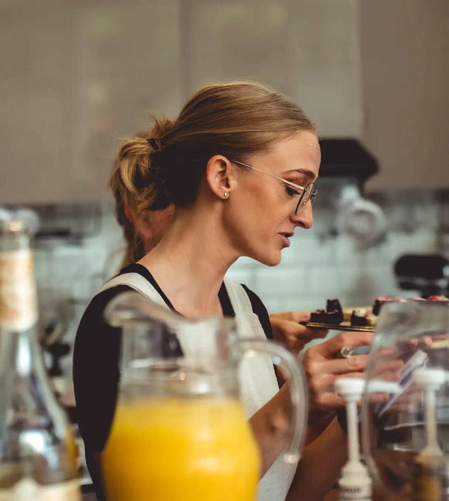
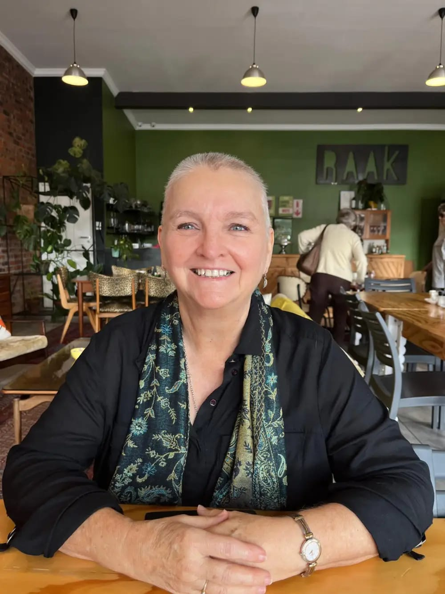
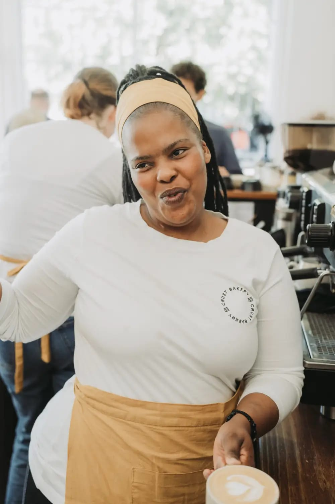

Irresistible handcrafted bakes Freshly baked cakes, biscuits and savouries - handmade from scratch using only the best quality ingredients.

CRUST began in 2020 when Jamie Tucker, a patisserie student of
Capsicum at the time, needed an outlet to practise during lockdown.
What started as a fun experiment on social media quickly turned into a thriving home business.
After a move to Cape Town and a couple ups and downs
(any small business owner knows the vibe!), it was time to take a leap of faith.
Jamie partnered with her mom Ady, an experienced businesswoman, and together they opened the first CRUST premises.
Once they found the perfect location in a cosy corner of Rondebosch,
they spent the next few months doing most of the bakery set-up themselves, along with some help from family and friends. From painting signage and hanging shelves,
to designing new features and restoring furniture, CRUST bakery is the result of loved ones coming together for the ultimate group project.
Have you ever met a pastry chef who can’t eat carbs? Well, now you have. While she grew up with a love for baking thanks to her mom and grannies,
Jamie was inspired to pursue a career in patisserie after being diagnosed with a reflux condition and having to cut carbs from her diet.
The lack of quality low-carb baked goods got Jamie thinking that a glow-up was in order.
She studied patisserie and started experimenting,
learning to apply traditional techniques to low-carb baking, resulting in pastries that look and taste just as good as their traditional counterparts.

With its high pressed ceilings and wood finishings, this iconic red building from the 1900s is what drew Jamie to this location.
“I think this space could be something,” she told her mom after the first viewing.
And, this space has a colourful history all its own – starting off as a pharmacy dispensary,
switching over to a well-loved family-owned hardware and electrical business, followed by a roastery and now CRUST.
We’re so excited to be part of 1 Duke Road’s
next chapter, and we’re so grateful to all our family, friends and fans for helping us get to this point!

After graduating with distinction from Capsicum Culinary School in 2020, Jamie poured her heart and soul into building CRUST. While baking is her passion, what truly makes her day is her incredible female-powered team.

With 30 years in business and 16 in retail, Ady brings a wealth of experience and unwavering support to CRUST. She’s most excited to see this creative venture blossom.

Nokwanda has been part of the bakery since day one, shining her warm light on everyone. Her welcoming smile and top-notch barista skills make every coffee moment special.